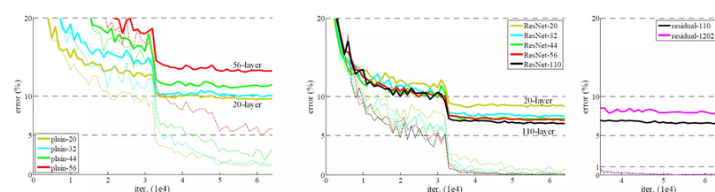

The objective of Face Emotion Recognition in the field of artificial intelligence is to categorize different facial expressions into subsets such as "happy", "sad", "surprised", "angry", "neutral" etc. This non-verbal mode of communication along with others is used in the field of Human-Computer-Interaction which is suggested by some studies to be around 70% to 80% when compared with verbal communication, having applications in autopilot, education, medical treatment, psychological treatment, survelliance and computer vision.
FER with a sequential model or a recurrent neural network is a common an effective approach when dealing with static images. First we will try developing an FER with a sequential model using the tensorflow and keras library, we will import the data from kaggle. The API we will use to create the model will stack layers linearly, where the data flows from one layer to the next.
import sys
!{sys.executable} -m pip install opencv-python
!{sys.executable} -m pip install matplotlib
!{sys.executable} -m pip install tqdm
!{sys.executable} -m pip install scikit-learn
!{sys.executable} -m pip install tensorflow
!{sys.executable} -m pip install kagglehub
import tensorflow as tf
import os
import cv2
import numpy as np
#import matplotlib.pyplot as plt
#import tqdm
from tqdm import tqdm
import matplotlib.pyplot as plt
%matplotlib inline
from sklearn.preprocessing import LabelBinarizer
import glob
from tensorflow.keras.preprocessing.image import ImageDataGenerator
import kagglehub
print("Path to dataset files:", path)
train_angry = os.path.join(train,'angry')
train_disgust = os.path.join(train,'disgust')
train_fear = os.path.join(train,'fear')
train_happy = os.path.join(train,'happy')
train_neutral = os.path.join(train,'neutral')
train_sad = os.path.join(train,'sad')
train_surprise = os.path.join(train,'surprise')
val_angry = os.path.join(val,'angry')
val_disgust = os.path.join(val,'disgust')
val_fear = os.path.join(val,'fear')
val_happy = os.path.join(val,'happy')
val_neutral = os.path.join(val,'neutral')
val_sad = os.path.join(val,'sad')
val_surprise = os.path.join(val,'surprise')
total_train = len(os.listdir(train_angry)) + len(os.listdir(train_disgust)) + len(os.listdir(train_fear)) + len(os.listdir(train_happy)) + len(os.listdir(train_neutral)) + len(os.listdir(train_sad)) + len(os.listdir(train_surprise))
total_val = len(os.listdir(val_angry)) + len(os.listdir(val_disgust)) + len(os.listdir(val_fear)) + len(os.listdir(val_happy)) + len(os.listdir(val_neutral)) + len(os.listdir(val_sad)) + len(os.listdir(val_surprise))
print(total_train)
print(total_val)
image_gen_train = ImageDataGenerator(
rescale=1./255,
rotation_range=40,
width_shift_range=0.2,
height_shift_range=0.2,
shear_range=0.2,
zoom_range=0.2,
horizontal_flip=True,
fill_mode='nearest')
train_data_gen = image_gen_train.flow_from_directory(batch_size=BATCH_SIZE,
directory=train,
shuffle=True,
target_size=(IMG_SHAPE,IMG_SHAPE),
class_mode='categorical')
image_gen_val = ImageDataGenerator(rescale=1./255)
val_data_gen = image_gen_val.flow_from_directory(batch_size=BATCH_SIZE,
directory=val,
target_size=(IMG_SHAPE, IMG_SHAPE),
shuffle=True,
class_mode='categorical')
model = tf.keras.models.Sequential([
tf.keras.layers.Conv2D(32, (3,3), activation='relu', input_shape=(150, 150, 3)),
tf.keras.layers.MaxPooling2D(2, 2),
tf.keras.layers.Conv2D(64, (3,3), activation='relu'),
tf.keras.layers.MaxPooling2D(2,2),
tf.keras.layers.Conv2D(128, (3,3), activation='relu'),
tf.keras.layers.MaxPooling2D(2,2),
tf.keras.layers.Conv2D(128, (3,3), activation='relu'),
tf.keras.layers.MaxPooling2D(2,2),
tf.keras.layers.Dropout(0.5),
tf.keras.layers.Flatten(),
tf.keras.layers.Dense(512, activation='relu'),
tf.keras.layers.Dense(7, activation='softmax') # Changed to 7 units for 7 classes and softmax activation
])
model.summary()
from tensorflow.keras.optimizers import AdamW
model.compile(optimizer=AdamW(learning_rate=0.0001),
loss='categorical_crossentropy',
metrics=['accuracy'])
BASE_DIRECTORY ='/'
mylog_dir = os.path.join( BASE_DIRECTORY, "train_log")
print("Mylog directory = " + mylog_dir)
tensorboard_callback = tf.keras.callbacks.TensorBoard(log_dir=mylog_dir, update_freq=1000)
print(os.path.join(mylog_dir, 'train'))
epochs = 10
history = model.fit(
train_data_gen,
steps_per_epoch=int(np.ceil(total_train / float(BATCH_SIZE))),
epochs=epochs,
validation_data=val_data_gen,
validation_steps=int(np.ceil(total_val / float(BATCH_SIZE))),
callbacks=[tensorboard_callback]
)
To improve the accuracy there are several studies. One of which applies CNN's with residual nueral network and a squeeze and excitiation network. Instead of training the network on the
entire profile of the face, featrues around the mouth and nose from the heatmaps prove to be significant on the database studied with accuracy around 77.37% and 83.37%
In particualr the problem of vanishing gradient and decreasing accuracy is solved by using a Residual Nueral Network. As the network is stacked with more layers, the training error is observed to increased significantly.
During the backpropogation of the training process, the gradient when multiplied through all the layers becomes infinitesimally small for the earlier layers to learn
ResNet provides a direct path for the gradients to flow backwards through the network with 'skip connections' so the network could be constructed with more layers

1. Techniques such as window based mechanism reduces the redundancy by not going over overlapping pixels again
2. Cross Attention Mechanism lets tokens from one set attend to the tokens from another set, which is different from the self attention mechanism
3. Window based cross attention mechanism when combined fuses the context of the above two to interact with the set of landmark specific features. And, with the guided attention the most relevant features
within a local window can be querried to accurately refine predicted coordinates rather than scanning the entire face
The network used in the study 1 is SENet which was developed in 2017. The three important steps in the network include
1. The squeeze operation obtains a feature tensor by extracting global feautres from CNN, then conducts global average pooling on the feature map
2. Excitation operation is designed to fully capture the channel-wise dependencies and generate weights for each channel
3. The scale operation multiplies the feature tensor by excitation to recaliberate the original feature map
SE-ResNet model used in the 1 study combines SeNet with ResNet. SE Block is used to capture the significance of each channel and and the residual block
combines the feautre information from the previous convolution layer
We will try to construct the above SE-ResNet model using the tensorflow and keras library and conduct training and validation process on the same database again to see if there are any significant improvements in the validation accuracy
import tensorflow as tf
from tensorflow.keras.layers import Input, Conv2D, BatchNormalization, Activation, MaxPooling2D, GlobalAveragePooling2D, Reshape, Dense, multiply, add
from tensorflow.keras.models import Model
def se_block(input_tensor, ratio=16):
# Arguments:
# input_tensor (Tensor): The input tensor from the preceding layers.
# ratio (int): The reduction ratio for the number of channels in the Dense layer.
channel_axis = -1
filters = input_tensor.shape[channel_axis] # Get the number of channels
# 1. Squeeze: Global Average Pooling
se = GlobalAveragePooling2D()(input_tensor)
# 2. Excitation: Two Dense layers to learn channel-wise weights
se = Reshape((1, 1, filters))(se)
# Reduction (e.g., filters / 16)
se = Dense(filters // ratio, activation='relu', kernel_initializer='he_normal', use_bias=False)(se)
# Expansion (back to the original number of filters)
se = Dense(filters, activation='sigmoid', kernel_initializer='he_normal', use_bias=False)(se)
# 3. Scale: Multiply the learned weights with the input features
output = multiply([input_tensor, se])
return output
def se_resnet_identity_block(input_tensor, kernel_size, filters):
# Arguments:
# input_tensor (Tensor): Input to the block.
# kernel_size (int): Size of the main convolutional kernel (usually 3).
# filters (list): List of 3 integers for the filters in the three Conv layers (e.g., [64, 64, 256]).
filters1, filters2, filters3 = filters
# Path 1 (The main Conv path)
ser = Conv2D(filters1, (1, 1), kernel_initializer='he_normal')(input_tensor)
ser = BatchNormalization(axis=-1)(ser)
ser = Activation('relu')(ser)
ser = Conv2D(filters2, kernel_size, padding='same', kernel_initializer='he_normal')(ser)
ser = BatchNormalization(axis=-1)(ser)
ser = Activation('relu')(ser)
ser = Conv2D(filters3, (1, 1), kernel_initializer='he_normal')(ser)
ser = BatchNormalization(axis=-1)(ser)
# Apply SE Block to the output of the convolutional path
ser = se_block(ser)
# Path 2 (The Skip Connection)
shortcut = input_tensor
# Final Addition and Activation
ser = add([ser, shortcut])
output = Activation('relu')(ser)
return output
def build_se_resnet_model(input_shape=(150, 150, 3), num_classes=7):
# Arguments:
# input_shape (tuple): The input image size (e.g., 150x150x3).
# num_classes (int): The number of output classes (7 for the 6 CHD types + Normal).
# 1. Input Layer
img_input = Input(shape=input_shape)
# 2. Initial ResNet 'Stem' (First Conv, BN, ReLU, MaxPool)
bser = Conv2D(64, (7, 7), strides=(2, 2), padding='same', kernel_initializer='he_normal')(img_input)
bser = BatchNormalization(axis=-1)(bser)
bser = Activation('relu')(bser)
bser = MaxPooling2D((3, 3), strides=(2, 2), padding='same')(bser)
# 3. Simplified ResNet Stages (Adding Identity Blocks)
# A full SE-ResNet-50 would have 16+ more blocks, but this demonstrates the structure.
# Stage 1: e.g., 3 blocks with 64-64-256 filters (requires a Conv Block first, omitted here for simplicity)
bser = se_resnet_identity_block(bser, 3, [64, 64, 64])
bser = se_resnet_identity_block(bser, 3, [64, 64, 64])
# Stage 2:
# In a real ResNet, you would add more stages with increasing filter counts (e.g., 128, 256, 512) and use
# a 'Conv Block' to handle dimension changes (when filters double or stride is 2).
# 4. Final Classification Layers
bser = GlobalAveragePooling2D()(bser) # Standard practice for ResNet classification
# Final Dense Layer for Classification
bser = Dense(num_classes, activation='softmax', kernel_initializer='he_normal')(bser)
# 5. Create and return the model object
model = Model(inputs=img_input, outputs=bser, name='se_resnet_chd_model')
return model
# To create the model:
se_resnet_model = build_se_resnet_model()
se_resnet_model.summary()
se_resnet_model.compile(optimizer=AdamW(learning_rate=0.0001),
loss='categorical_crossentropy',
metrics=['accuracy'])
epochs = 10
history = se_resnet_model.fit(
train_data_gen,
steps_per_epoch=int(np.ceil(total_train / float(BATCH_SIZE))),
epochs=epochs,
validation_data=val_data_gen,
validation_steps=int(np.ceil(total_val / float(BATCH_SIZE))),
callbacks=[tensorboard_callback]
)
To mitigate the problem of vanishing gradients and increase accuracy in validation set we implemented a combination of Squeeze and excitation netwrok with residual nueral network instead and compared the results with the standard sequential approached used in the step one. Observing the validation outputs of both the approaches we learned that the SE-ResNet approach increases the validation accuracy on our dataset from - to -
[0] Sequential model built by referencing "CS663" Computer Vision Course, Exercise: Classification
[1] Web Article - "A study on computer vision for facial emotion recognition" (https://www.nature.com/articles/s41598-023-35446-4?fromPaywallRec=false)
[2] "Deep Residual Learning for Image Recognition" Microsoft Research{kahe, v-xiangz, v-shren, jiansun}@microsoft.com (https://ar5iv.labs.arxiv.org/html/1512.03385)
[3] SE-ResNet built by referencing (https://www.analyticsvidhya.com/blog/2021/08/how-to-code-your-resnet-from-scratch-in-tensorflow/) with the help of Gemini 2.5 Flash